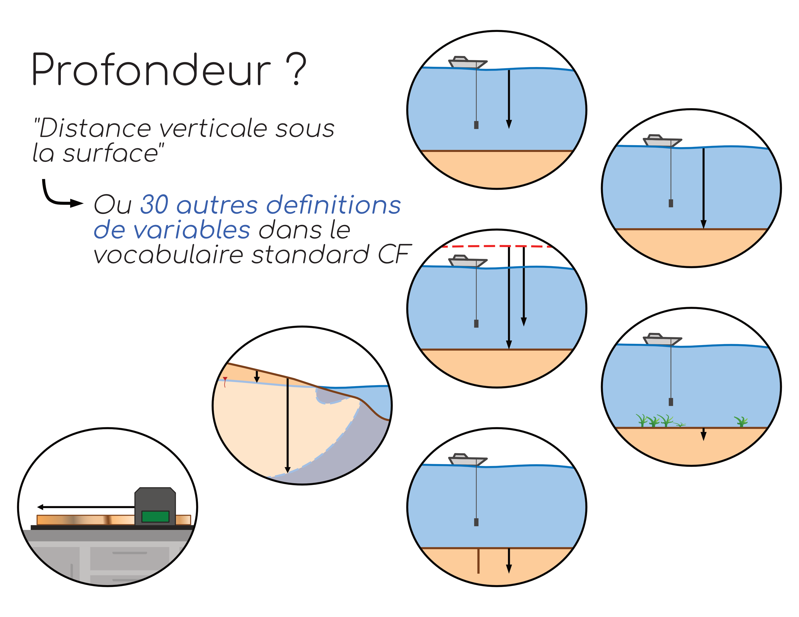

Variable Dictionary
Why a dictionary?
To facilitate data reuse and interoperability, it is important to use a common vocabulary to designate different variables. Some standards have been designed for this purpose, such as the CF Convention vocabulary for oceanographic physical-chemistry data, or the vocabulary from the Darwin Core for biology and biodiversity data. These controlled vocabularies assign unique terms to a specific variable. For example, without any standard, a simple variable depth could be interpreted in many different ways (figure below). In the CF Convention, however, depth will be specifically defined as the "vertical distance below the surface," and other variables such as sea_floor_depth will precisely designate the depth of the seafloor from the water's surface.

Although the use of a controlled vocabulary from the outset is strongly recommended, in some cases, the terms associated with the different variables may not seem intuitive and may not be practical to use in the field or during analyses. It is therefore important to always build and associate a dictionary of variables with the databases themselves. This dictionary will contain as much metadata as possible associated with each variable to maximize the chances of the data being interpreted correctly. For example, for depth variables, the dictionary information could be:
depth_r
- Unit: meters
- Description: Depth from the seafloor to the furthest point to which benthic plant roots extend
- Method: Visual observation
depth_b
- Unit: meters
- Description: _Depth of the seafloor from the sea surface _
- Method: Pressure probe at the seafloor, the measurements of which are converted into distance /
💡 Don't panic: Standards and controlled vocabularies evolve as research progresses and data dissemination efforts intensify. This field constitutes a scientific discipline in its own right. Data scientists are there to carry out and/or refine the standardization process for your data. The important thing is that all the information is available to understand what the data represents.
What does a variable dictionary contain?
List of variables and descriptions
The variable dictionary should contain all shared variables, including those that might seem obvious to you. This includes:
- their abbreviated names (as presented in the data);
- their full names (as they would appear in the literature);
- their standard names (ideally, but not mandatory in draft form or working documents);
- their units of measurement;
- their precise definitions and/or descriptions.
Coordinate Reference System
For spatialized data (i.e., data that includes information on its precise location in space), it is imperative to specify the geographic coordinate reference system (CRS) associated with the provided coordinates in the variable description. The most common system for data dissemination is the WGS84 system (EPSG:4326). For data recorded in CRSs that include zoning, both the system and the zone considered must be indicated. For example, in North America, the NAD83 system is commonly used, but considers different zones. One way to simplify the notation to ensure it is as understandable as possible is to reference the coordinate system by adding the corresponding EPSG code. Descriptions of the different coordinate systems are available on the website: https://epsg.io/
Time
Best practices suggest that times should always be reported in Coordinated Universal Time UTC according to the ISO8601 standard (see section Dates and Times of the detailed guide). However, it is sometimes necessary for times to be reported in local time in the database. Therefore, it will be very important to specify in the dictionary whether the time provided is reported in UTC, in standard times strictly following the time zone, or in local times which may be subject to seasonal change. For example, in Rimouski (Qc), July 8, 2024 at 2:00 PM in UTC time is equivalent to July 8, 2024 at 9:00 AM in Eastern Standard Time (EST) but also to July 8, 2024 at 10:00 AM in local time. For this reason, using the format 2024-07-08T14:00:00Z, 2024-07-08T09:00:00-05:00, or 2024-07-08T10:00:00-04:00 directly in the database is also strongly recommended.
Instruments involved
To ensure maximum transparency and that data describing the same variable are comparable, it may be relevant to indicate the instruments used to obtain them. This may include the instruments used for sampling and the instruments used for analyses. Where possible, the minimum relevant information is:
- the type of instrument (e.g., CTD rosette; multiparameter probe; salinometer);
- the brand of the instrument;
- the model of the instrument.
Method Definition
Similar to instruments, the method used to obtain the data can be used to determine whether data are comparable. A brief description of the main analysis steps, such as filtrations and additions of solutions for sample preservation or compound extraction, are important elements to add to the variable definition.
Where to place the dictionary?
A variable dictionary can be seen as a kind of reading key for deciphering, and therefore understanding, a database. It is therefore essential that the dictionary be linked to its database at all times. To achieve this, various strategies are possible.
File combining data and metadata
The most secure strategy is to choose a file format that contains both the data and metadata (including the dictionary information) in a single file. This way, there is no risk of the information being separated during database transfer. This is the case, for example, for netCDF files. However, this solution is not practical for databases under construction, where content would need to be added or modified frequently.
This strategy is often implemented when database construction is complete and the database needs to be shared.
Independent tables shared together
To facilitate this editing work, a common solution is to build this dictionary in a table alongside your databases, either in a separate csv file or as a tab included in an Excel-type file (remember, however, that best practices dictate that data sharing be done through non-proprietary files). This approach, however, requires ensuring the dictionary file always accompanies the database file. Using a .zip archive folder may be considered to ensure the files remain separate.
If multiple databases are built in parallel with a single dictionary file, it will be important to add the name of the database where the variables are located.
Example of a dictionary structure
| file_name | variable | long_name | standard_name | unit | description | instruments | methode |
|---|---|---|---|---|---|---|---|
| CTD_profils_2024-05-05.csv | OXY | Oxygen concentration | mass_concentration_of_oxygen_in_sea_water | mg m-3 | Oxygen concentration in the water colomn | Oxygen probe on CTD - SeaBird - SBE43 | Direct measurments with post-calibration against laboratory analysis |
| CTD_profils_2024-05-05.csv | lat | latitude | latitude | degrees_north | WGS84 - epsg:4326; 5m precision | GPS - BRAND - MODEL | On the boat at the start of each profil |
| CTD_profils_2024-05-05.csv | ... | ... | ... | ... | ... | ... | ... |